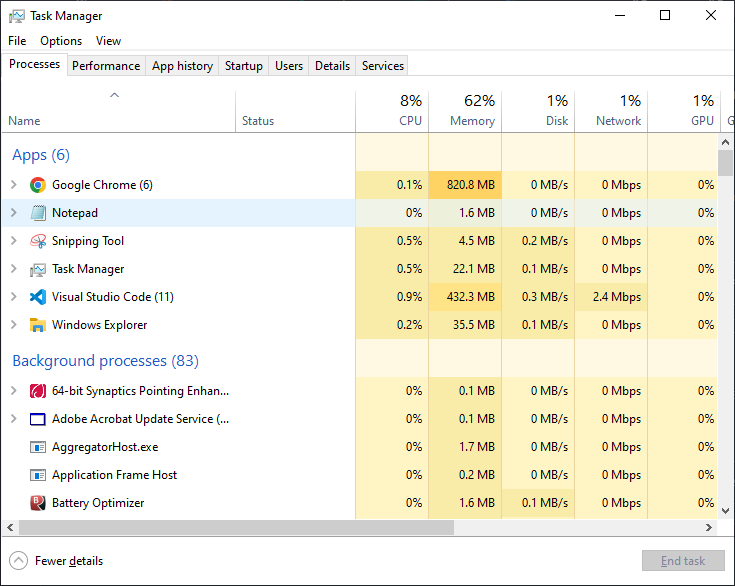
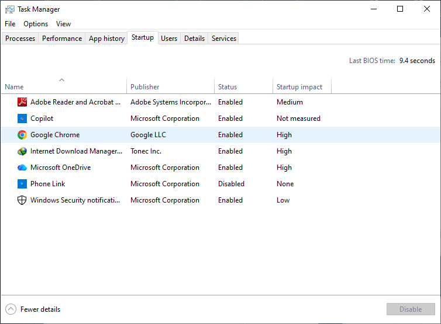
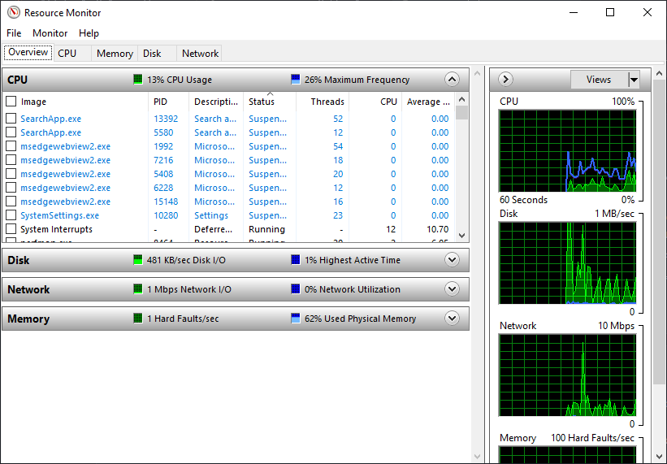

Reviewing and Troubleshooting a Slow System
System Performance Analysis — identifying what slows the system down using Task Manager and Resource Monitor
01 / Mission goal
The goal of this project is to identify the cause of a computer's slow performance and find the application or process that puts the most pressure on system resources. The usage of the processor (CPU), main memory (RAM), disk and network is evaluated to determine the main source(s) of the slowdown.
02 / Tools used
Task Manager: gives an overall view of resource usage and manages running applications and processes.
Resource Monitor: shows more detailed CPU, Memory, Disk and Network usage per process.
03 / Execution steps
- Initial check with Task Manager: press Ctrl + Shift + Esc. In the Processes tab, review the CPU, Memory, Disk and Network columns and click each column header to sort processes by highest usage.
- Identifying the problem source: in the Performance tab, view the chart for each resource. Usage close to 100 percent, especially if sustained, can indicate heavy pressure on that resource.
- Checking startup programs: in the Startup tab, review the programs that run when Windows starts and identify those with High impact.
- Detailed analysis with Resource Monitor: press Win + R and enter resmon to launch the tool. Then review the CPU, Memory, Disk and Network tabs to identify heavy processes.
- Fixing the problem: after identifying the cause of the slowdown, close unnecessary applications or processes, disable unnecessary Startup programs and, if needed, consider a virus scan, freeing disk space or adding RAM.
04 / Findings and technical analysis
The values in the table below are samples. When the project is actually run, the numbers observed in Task Manager and Resource Monitor must replace them.
| Resource | Observed value (sample) | Status |
|---|---|---|
| CPU | 80% | Critical |
| RAM | 63% | High |
| Disk | 10% | Normal |
| Network | 5% | Normal |
- High CPU usage can be caused by several heavy applications and background processes running at the same time.
- Several programs with High impact in the Startup tab can increase Windows startup time.
- Heavy disk activity and a long Disk Queue in Resource Monitor can indicate pressure on the storage device.
- When RAM fills up, the system may use the Page File on disk; this can reduce performance, especially on systems with slow storage.
05 / Problems and solutions
| Problem | Suggested solution |
|---|---|
| Resource-heavy applications running | Close the unnecessary application or process with End Task |
| Too many programs in Startup | Disable unnecessary programs in the Startup section |
| High RAM usage | Close extra applications and add RAM if needed |
| Disk pressure | Free up space, clear temporary files and, if possible, use an SSD |
| Possible malware | Run a full antivirus scan |
06 / Visual documentation




07 / Summary and findings
A slow system is usually the result of a combination of factors, including heavy applications, a crowded Startup list, high RAM usage and disk pressure. By checking step by step in Task Manager and Resource Monitor, the main source of the problem can be identified.
After closing unnecessary applications and disabling unnecessary Startup items, resource usage is expected to drop and system speed and responsiveness to improve.